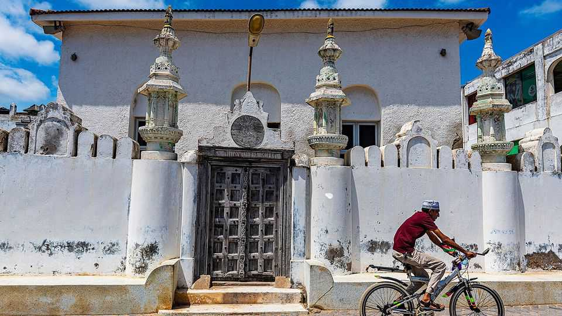
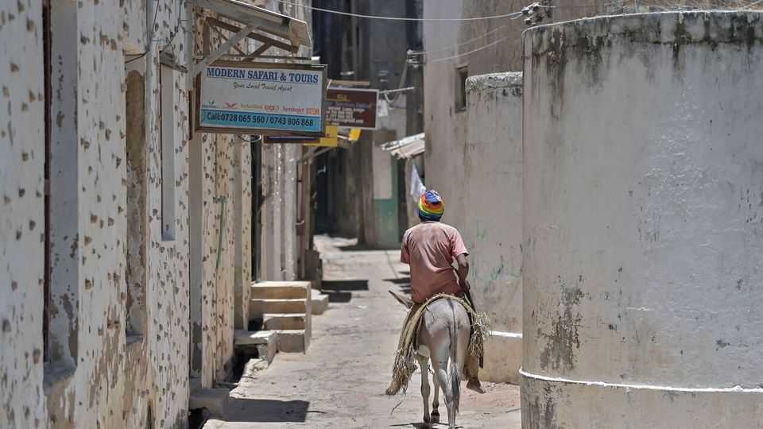
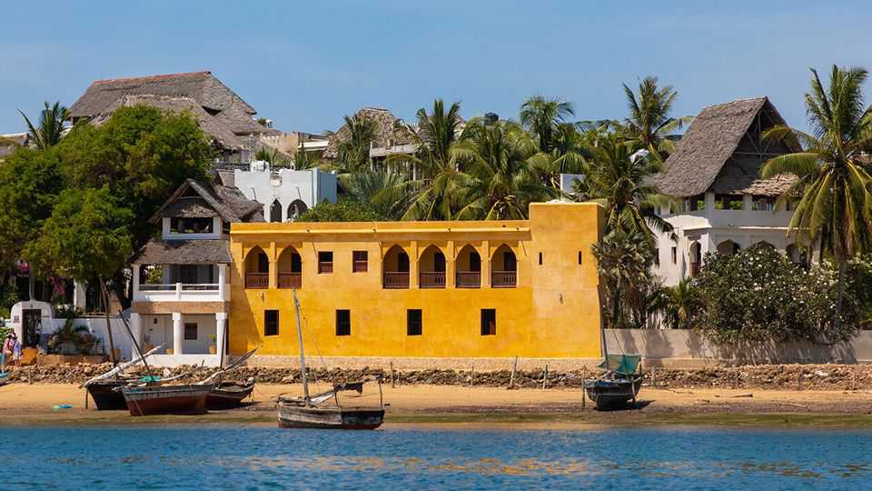

How to preserve Africa’s architectural gems
Development and restoration must go hand in hand
July 16th 2026

Darini House in Lamu, an old Kenyan town on the Indian Ocean coast, is a marvel: high coral stone ceilings; ornate vidaka shelves, carved meticulously into the walls; a shaded courtyard brightened by lilies. It is also a building site. For years, parts of the centuries-old family home have been near-derelict, bags of cement gathering dust beneath bat-populated beams. Now, slowly, they are being restored. “This place holds our dreams,” says Khaulah Abdulkadir of the Friends of Lamu Cultural Heritage, a local NGO. “We are hoping to breathe more life into it.”
Their plan, backed by the World Monuments Fund (WMF), a New York-based conservation body, is to acquire the property and, with outside investors, turn it into a Swahili cultural centre with a café, gallery and rental space for workshops and offices. By leasing and renovating historic homes this way, they hope to spark regeneration in Lamu’s dilapidated, UNESCO-listed Old Town. Yet critics fear that the approach, which relies on tourists and foreign capital, will erode the town’s essence. It shows the difficulty of preserving heritage in Africa, where conservation funds are scarce and development threatens to bulldoze what remains.
Africa’s historic buildings and monuments account for less than 10% of the UNESCO World Heritage List. But they are overrepresented among such places deemed by the UN’s cultural arm to be “in danger”. By one estimate as many as one in three buildings in Lamu’s Old Town are in ruins. The once-bustling Madukini Street near Darini House is almost abandoned.
In some places, such as Timbuktu in northern Mali, the most urgent threat comes from conflict and jihadists. Elsewhere, the problem usually boils down to a lack of resources, says Stephen Battle, WMF’s Africa director. Where states are cash-strapped, much depends on foreign governments, the UN and NGOs. By one estimate, since the 1980s roughly half of renovations in Stone Town, on Tanzania’s Zanzibar, have been funded by Oman.

Residential buildings like those in Lamu present a particularly thorny challenge for conservationists. Unlike, say, the palaces and castles of Gondar in Ethiopia, which are the property of the state, private homes are typically in the hands of families and individuals. Many lack the means for tasteful restoration. In Lamu, the problem is worsened by the fact that homes which have been passed down multiple generations sometimes have 20 or more relatives squabbling over ownership. As a result, many “end up doing renovation the wrong way”, says Abdalla Kuresh, one of only a few builders in Lamu still practising the traditional vernacular style.
Shoddy—or non-existent—documentation worsens the problem. Killion Mokwete, a Botswanan architect at Northeastern University in Boston, says Afro-Brazilian architecture in west Africa is at risk in part because countries lack accessible digitised databases and archival institutions. This can make it hard both to prove ownership and to know how to restore a building to its original condition. It also helps explain why these architectural gems, many built and designed by former slaves who returned from the Americas in the second half of the 19th century, have not been listed by UNESCO. To fix this Mr Mokwete co-founded the African Built Heritage Project in Benin, which keeps digital records of endangered buildings.
At root, though, lies a more fundamental difficulty: indifference. In Kenya, as elsewhere, “preservation of the built environment can quickly find its way to the bottom of the pile,” says Teckla Muhoro, an urban expert at Jomo Kenyatta University of Agriculture & Technology in Nairobi, the capital. For residents of Nairobi, historic buildings are often tainted by British colonialism; urban heritage in Lamu is sometimes seen as the work of Arab interlopers. African governments and foreign tourists, meanwhile, tend to pay far more attention to the continent’s wildlife and natural landscapes.

This means that when the choice is between urban development and heritage preservation, the latter typically loses. Eritrea’s capital, Asmara, whose perfectly preserved Italian-era Art Deco architecture was awarded UNESCO status in 2017, is almost unique. (Eritrea’s autocracy and stagnant economy mean it also is no model.) Much more common is the fate of old buildings in Ethiopia’s capital, Addis Ababa, which have been systemically razed in recent years. In pursuit of hyper-modernisation the city’s authorities have tossed aside laws designed to protect heritage, banishing poor residents to the periphery. “Ironically, the national-heritage authority itself is enabling the demolitions,” says Nahom Teklu, an Ethiopian architect.
But pitting growth against conservation is ultimately a “false dichotomy”, argues Shadreck Chirikure of Oxford University. Plenty of picturesque European cities are proof of this. So is the idea of an inescapable trade-off between indigenous preservation efforts and foreign investment. UNESCO’s Mohammed Juma warns against creating “ghost historical cities”, which preserve architectural heritage but exclude local residents. A better solution may be for authorities to encourage tourism and investment, using the proceeds of growth to fund conservation. Heritage laws and building codes are, after all, more likely to be enforced if locals themselves feel their benefits. ■
Sign up to the Analysing Africa, a weekly newsletter that keeps you in the loop about the world’s youngest—and least understood—continent.